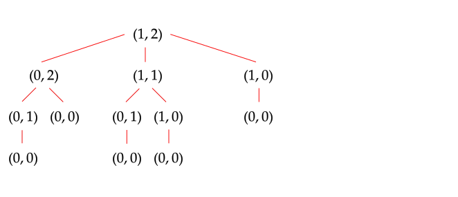
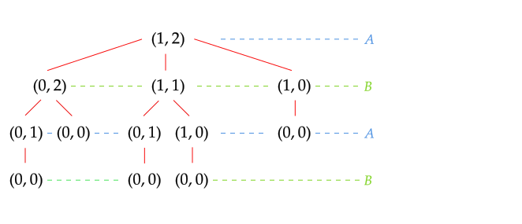
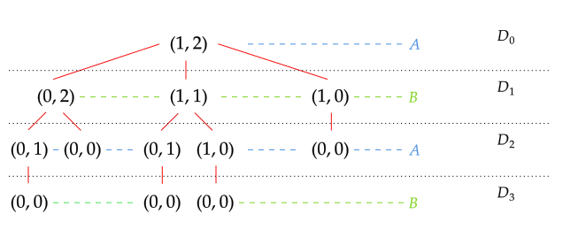
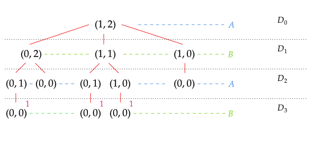
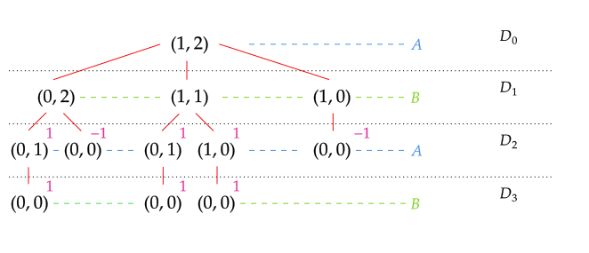
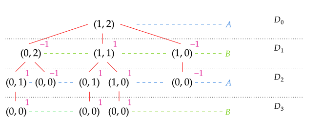
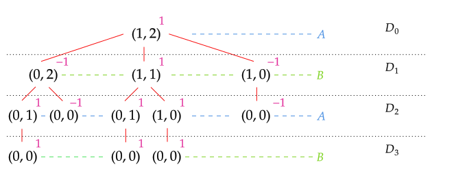

Minimax in Nim - C++ Implementation
Minimax Description
The minimax algorithm computes the minimax value of the current state of the game. The minimax value of game is defined as
$$ \bar{u}_i = \min_{s_{-i}} \max_{s_i} u_i(s_i, s_{-i}) $$ Where- $i$ is the index of selected player
- \( -i \) all players except \(i\)
Nim Game Description
The nim game is a two-player turn-based mathematical combinatorial game that involves piles of objects.
Rules
1. Initial setup: The game begins with \(n\) piles of object. \(i\)-th pile has \(p_i\) number of objects. The game state can be described as the tuple of every pile state.
$$ P = (p_0, p_1, \dots , p_i, \dots , p_n) $$2. Turns: On each player's turn, they must:
- Select a pile \(p_i \neq 0\).
- Remove \(k\) objects from selected pile. \( \ \ \ \{ k \in \mathbb{N} \ | \ 1 \leq k \leq p_i \} \)
3. End condition: If the player starts turn with
$$ P = (0, \ 0, \dots , \ 0) $$the game ends and player loses.
Minimax Usage Example
Suppose that we have 2 players \(A\), \(B\) with initial setup $$ P = (1,2) $$
We can graph the game tree showing all possible game states.

Note that with every pile modification the player changes

We can also track how many moves we needed to get to a certain game state. To track this, we add the depth parameter \(D_i \) where \(i\) is the number of moves needed to get to position.

To use minimax we need to assign values to moves. Notice that the game has no draws. This observation means that in any position, the player can either be winning or losing.
The above property leads to fact that we need \( 2 \) numbers to represent current game state. Let's assume that at any game state value
- \(1 \implies A\) is winning
- \(-1 \implies B\) is winning
If we would like to obtain the value \( P = (1,2) \) \( D_0 \) we first have to get values of all \(D_1\) states, to evaluate all \( D_1 \) states, we need to get all \( D_2 \) values and so on down to \(D_{\text{Max}}\).
Note that leaves will return opposite number to current player pick because
To get backwards from top of game tree to all leaves we need to use recursion.
Algorithm Tracking
\( B \) minimizes

\( A\) maximizes

\( B \) minimizes

\( A \) maximizes

Resources
- Artificial Intelligence: A Modern Approach 3rd Edition